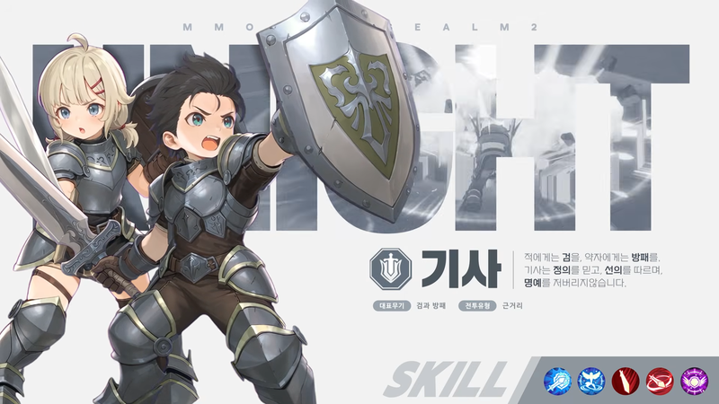
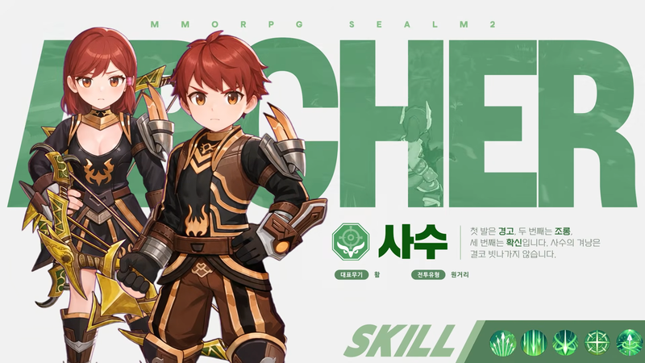
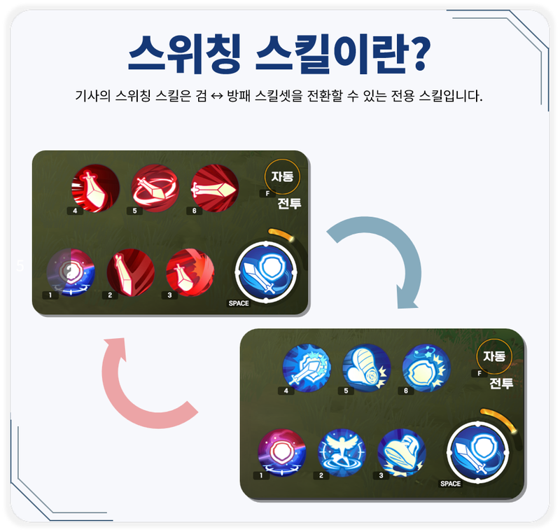
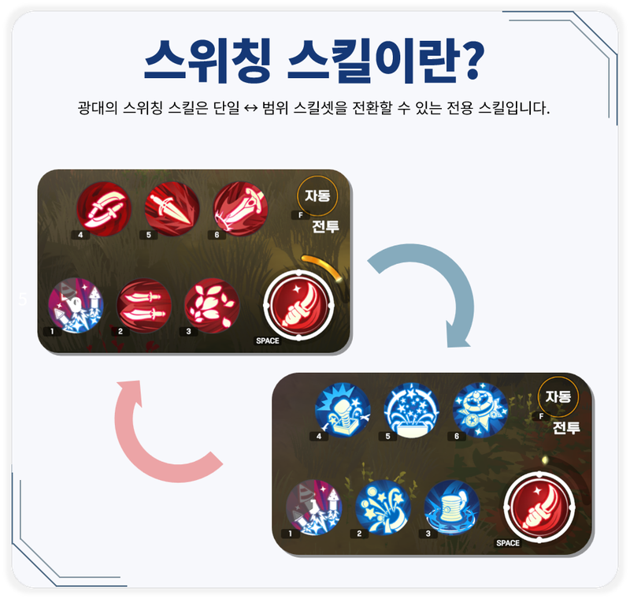
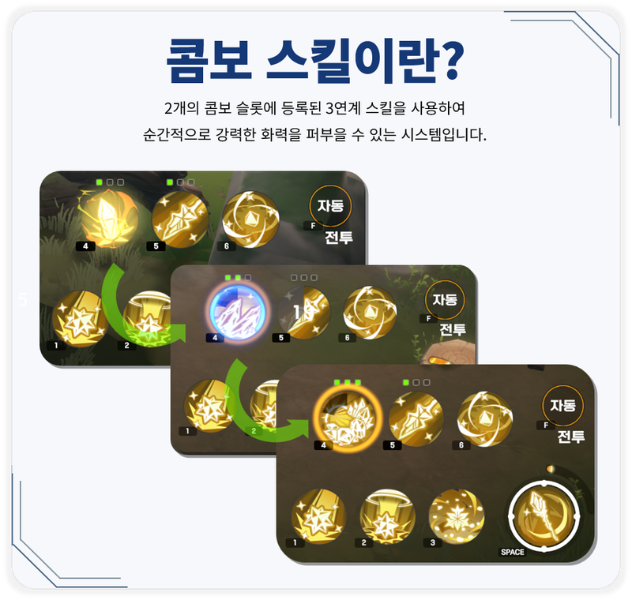
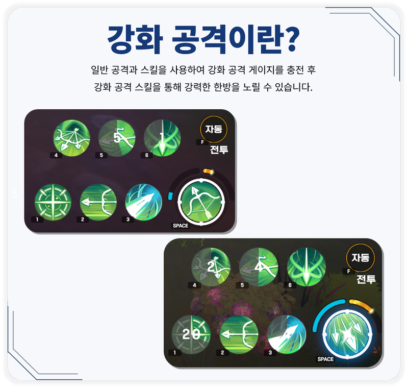
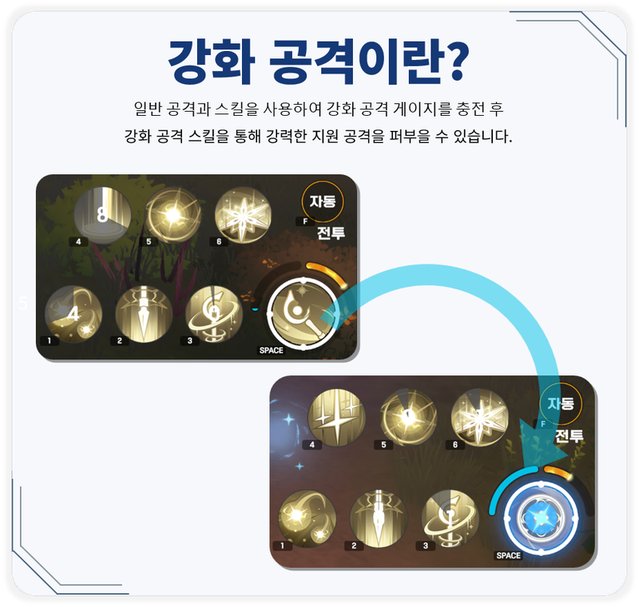

씰M2 직업 추천 5종 비교, 기사·광대·사수·마법사·성직자 역할 차이와 고르는 기준
씰M2 직업 추천은 순위표가 아니라, 내가 어떤 전투 방식을 좋아하느냐로 고르는 게 맞아요. 한 번 고른 직업은 바꿀 수도 없으니, 다섯 직업 중 손에 맞는 쪽부터 가려 보시는 게 좋겠습니다.
캐릭터 생성 화면에서 다섯 직업 앞에 멈칫하신 분들 많으실 텐데요. 공식 포럼의 직업 소개를 내 말로 풀어서 무기와 거리와 조작 방식을 비교하고, 취향별로 고르는 기준까지 이어 봤어요.
직업 변경이 안 된다는데, 캐릭터 만들기 전에 뭘 알아야 하나요?
공식 FAQ 기준으로 정식 출시 시점에는 캐릭터를 만들 때 고른 직업을 다른 직업으로 바꾸는 기능이 지원되지 않아요. 추가되면 공식 포럼에서 안내한다고 하고, 직업 특징을 충분히 보고 고르라는 권고도 있어요. 새로 만들면 되지 않나 싶으실 텐데, 그 길에도 챙길 게 있어요.
- 캐릭터 슬롯은 기본 3개이고, [상점]의 [루비 상점]에서 [기타] 탭에 있는 슬롯 확장권으로 최대 2개를 더해 5개까지 늘려요.
- 슬롯 확장권은 캐릭터 선택 화면에서는 살 수 없어서, 게임에 들어가 상점에서 사야 해요.
- 삭제는 신청 후 10일 대기이고 그 사이 취소할 수 있지만, 길드에 가입한 캐릭터는 삭제 신청이 안 되고 최종 삭제하면 복구도 안 돼요.
생성 화면에서 오른쪽의 직업을 누르면 소개와 사용 스킬이 나오니, 아래 비교를 읽고 한 번씩 눌러 보고 정하시면 후회가 줄 거예요.
씰M2 직업 5종, 무기와 거리와 역할을 표로 비교하면 어떤가요?
기사는 검과 방패를 번갈아 쓰는 근거리 딜러 겸 탱커, 광대는 중독을 쌓아 터뜨리는 딜러, 사수는 활을 쓰는 원거리 딜러, 마법사는 완드로 범위 마법을 쓰는 원거리 누커, 성직자는 스태프로 아군을 돕는 서포터예요. 표는 공식 포럼의 직업 미리보기 다섯 편을 기준으로 했는데, 이 소개문이 개발 중인 버전 기준이라 출시 후 체감은 직접 해 보셔야 정확해요.
| 직업 | 대표무기 | 거리 | 역할 | 핵심 조작 | 궁극기 |
|---|---|---|---|---|---|
| 기사 | 검과 방패 | 근거리 | 근거리 딜러·탱커 | 스위칭, 검과 방패 스킬셋 전환 | 찬란한 섬광 |
| 광대 | 단검 | 근거리｜원거리 | 중독 누적 딜러 | 스위칭, 단일·범위 전환과 격발 | JQKA |
| 사수 | 활 | 원거리 | 단일 대상 딜러 | 강화 공격 게이지 충전 | 데드 존 프로토콜 |
| 마법사 | 완드 | 원거리 | 범위 마법 누커 | 콤보, 3연계 스킬 | 그랑 미티어 사브르 |
| 성직자 | 스태프 | 근거리｜원거리 | 서포터 | 강화 공격과 회복 | 생츄어리 |
거리 칸은 다섯 직업 모두 공식 직업 카드의 전투유형 표기를 옮긴 거예요. 광대의 대표무기는 카드에 단검으로 적혀 있고, 소개문에는 나이프로 나와요. 게임메카가 광대를 중거리 딜러로, 마법사를 캐스팅 시간이 필요한 범위 스킬 직업으로 전한 건 매체의 표현이라 표에는 넣지 않았고, 공식 카드의 광대 표기는 근거리｜원거리입니다.

기사 카드 오른쪽 아래에 대표무기 검과 방패, 전투유형 근거리가 적혀 있어요. 공식 포럼 직업 소개에서 가져온 개발 중 버전 화면입니다.

사수 카드에는 대표무기 활, 전투유형 원거리가 보여요. 원거리는 텍스트 소개문에도 나오지만 활은 카드에만 있는 표기예요.
스위칭·콤보·강화 공격 중 어떤 전투 방식이 끌리나요?
공식 소개는 다섯 직업을 스위칭(기사·광대), 콤보(마법사), 강화 공격(사수·성직자) 세 갈래로 나뉘어요. 그러니 직업보다 먼저 이 셋 중 손이 끌리는 쪽을 정하는 게 빨라요.
방어와 공격을 오가는 게 좋다면 기사예요. 검 스킬은 비교적 강한 피해를 주고, 방패 스킬은 실드를 씌우거나 스턴·슬로우로 적을 묶는 쪽이라 상황에 맞춰 두 가지를 바꿔 가며 전선 한가운데에서 버티는 맛이에요.

기사는 검 스킬셋과 방패 스킬셋을 갈아 끼우는 스위칭이 핵심이에요.
중독을 쌓다가 결정적 순간에 터뜨리는 게 좋다면 광대예요. 스위칭은 기사와 이름이 같아도 단일 대상 스킬셋과 범위 스킬셋을 바꾸는 방식이에요. 일부 스킬이 지속 피해인 중독을 걸어 두고, 특정 스킬로 격발하면 쌓인 중독에 비례한 순간 피해가 들어가요.

광대는 단일과 범위 스킬셋을 전환하는 스위칭이에요. 개발 중 버전 화면이에요.
한 방을 설계하는 게 좋다면 마법사예요. 콤보 슬롯 두 칸에 3연계 스킬을 등록해 두면 단계가 오를수록 세지다가 마지막 단계에서 큰 피해가 한꺼번에 들어가요. 범위 피해를 키우는 버프 스킬도 있어서, 몰려 있는 적을 쓸어 담는 사냥과 궁합이 좋다고 공식은 소개해요.

마법사는 콤보 슬롯 두 칸에 3연계 스킬을 등록해 순간 화력을 내요.
끊김 없이 쏘는 리듬이 좋다면 사수예요. 일반 공격과 스킬로 강화 공격 게이지를 채우고, 가득 차면 강화 공격이 나가요. 공식은 흐름을 끊지 않고 계속 공격해서 게이지를 채우는 것을 전투의 핵심으로 짚었어요.

오른쪽 아래 둥근 게이지가 차오르면 강화 공격 스킬이 켜져요. 개발 중 버전 기준 화면이에요.
공격하면서 아군도 챙기는 게 좋다면 성직자예요. 사수처럼 스킬로 강화 공격 게이지를 채우되, 미리 정해 둔 강화 공격을 쓰면 지원 효과가 붙는 구조예요. 원거리 공격과 회복을 함께 굴리며 후방에서 받쳐 주는 서포터라서, 공격을 아예 접는 힐러와는 결이 달라요.
혼자 하는 편인가요, 파티를 자주 하나요?
공식 직업 소개에는 광대를 뺀 네 직업의 솔로 때와 파티 때 모습이 따로 적혀 있어요. 기사는 솔로·파티 모두 유연하다고 소개돼요. 광대는 스킬셋 전환과 중독 격발 위주로 소개돼서, 위 취향으로 고르시면 돼요.
이럴 땐 이렇게
· 혼자 사냥하는 날이 많다면 솔로 모습이 따로 소개된 사수·마법사·성직자도, 솔로·파티 모두 유연하다는 기사도 어울려요. 사수는 적이 다가오는 걸 막으며 안전하게 쏘고, 마법사는 범위 마법으로 여러 마리를 한 번에 눌러요. 성직자는 원거리 범위 공격에 자가 회복을 더해서 안정적이라고 소개해요.
· 파티를 자주 한다면 사수는 속사와 차지 샷으로 피해를 모으고, 마법사는 콤보의 순간 화력을 보태요. 성직자는 아군 상태와 전투 상황을 보면서 공격과 지원 타이밍을 고르는 역할이에요.

성직자의 강화 공격은 공격과 지원을 한 번에 얹는 쪽이라, 파티에서 지원 타이밍을 고르는 역할과 이어져요. 공식 포럼 직업 소개, 개발 중 버전 화면이에요.
파티 쪽을 더 보신다면 알아둘 게 셋 있어요.
- 파티 던전은 혼자서도 입장하지만 난이도가 파티 플레이 기준으로 잡혀 있고, 최대 4인이에요.
- 필드 사냥은 파티 인원에 따라 처치 보너스가 붙어요.
- 던전 두 종류는 계정별 하루 3회이고 0시에 충전돼요.
부캐를 만들 생각이면 직업은 어떻게 나눠 잡나요?
슬롯이 최대 5개라서 개수만 보면 직업 수와 같아요. 저라면 본캐는 오래 끌리는 전투 방식으로 정하고 부캐로 다른 갈래를 맛볼 것 같아요.
도감은 직업별 정수 등을 쓰는 시스템인데, 도감으로 오른 능력치는 같은 서버 안의 모든 캐릭터에 적용된다니, 부캐를 키울 때 든든하네요.
직업을 고른 직후에는 뭘 챙기면 되나요?
직업을 고른 직후에는 자동 전투와 자동 성장 두 가지만 알아도 첫날이 편해요. 퀘스트 탭을 누르면 자동으로 퀘스트가 진행되고, 바일 무리 근처에서는 자동 사냥이 돌아요.
- 스탯과 스킬 포인트를 직접 나눠 찍지 않고, 레벨업하면 직업 특성에 맞게 능력치가 자동으로 올라요.
- 스킬은 필요한 재료로 강화해요.
씰M2 직업 자주 묻는 질문
Q. 씰M2에서 제일 강한 직업이 뭔가요?
확인한 공식 포럼과 매체 기사 범위에서는 직업 서열을 찾지 못했습니다. 대신 직업마다 맡는 역할과 조작 방식이 갈리니, 위 표와 세 갈래를 보고 손에 맞는 쪽을 고르시면 돼요.
Q. 성별에 따라 능력치가 달라지나요?
달라지지 않습니다. 공식 FAQ에 성별에 따른 능력치 차이는 없고 외형만 달라진다고 나와 있습니다.
Q. PvP 때문에 직업 상성을 따져야 하나요?
출시 시점에는 PvP와 PK가 없다고 안내합니다. 경쟁은 필드 보스와 도전의 전장에서 이뤄지니, 상성보다 사냥 취향으로 고르셔도 돼요.
Q. 직업이 앞으로 더 추가되나요?
출시 때는 다섯 직업이고, 이후 신규 직업이 추가될 가능성을 열어 뒀어요. 기존과 다른 조작 방식과 전투 방향을 고려하겠다고 했지만 종류와 일정은 추후 안내될 예정이에요.
Q. 2차 전직 같은 게 있나요?
공식 직업 소개와 FAQ에는 전직 내용이 나오지 않아요. 있다 없다를 단정할 수 없으니, 공지가 올라오는지는 공식 포럼 공지사항에서 확인해 주세요.
씰M2 직업 추천 정리
저라면 스위칭·콤보·강화 공격 중 손이 끌리는 갈래를 먼저 정하고, 그 안에서 솔로와 파티 비중으로 한 직업을 고르겠어요. 여러분은 어느 갈래가 끌리시나요? 출시 후 체감 자료가 쌓이면 다시 정리해 올게요. 즐겁게 모험 시작하시길 바랍니다.
참고한 곳
· 씰M2 직업 미리보기 - 기사(포럼 183)
· 씰M2 직업 미리보기 - 광대(포럼 184)
· 씰M2 FAQ(포럼 13/18)
· 캐릭터 슬롯 가이드(포럼 17/1547)
· 게임메카 씰M2 직업 소개 기사(2026.09.15)
직업 미리보기 사수·마법사·성직자 편(포럼 185~187)은 위 이미지 아래 출처 줄에 달아 뒀어요. 2026.10.23 기준이에요.